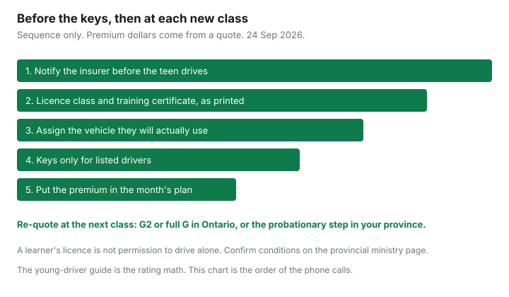

Insurance · Canada
Life Event: Adding a Teen Driver in Canada—Insurance Steps Before They Get the Keys
Families treat the first licence like a calendar event and the insurance like a renewal problem. The crash that happens on a learner drive, or on the first solo trip, is a coverage problem if the teen was never listed. This page is the order of the calls: notify, document the licence stage, assign a real car, match the household rules to the policy, put the premium in the month’s cash plan, and re-quote when the class changes. Why the premium is high, and which levers are legal, is already on the young-driver guide. Read that for the rating. Use this page so the rating is in place before anyone drives.
Disclosure: Broker quote portals and auto insurance comparison sites are offer types for a second quote at the same liability and accident-benefits limits. Saving Optimizer may earn a commission if partner links are added later. We do not claim a partnership with any brokerage or insurer. There is no national young-driver percentage. Education only.
Key takeaways
- Tell the insurer before the teen drives, including supervised practice. Do not wait for a ticket or a claim to “add them officially.”
- The application needs the licence class they hold today, and a training certificate only helps where that insurer files a discount.
- Assign the car they will actually use. A parent listed as principal on a teen’s daily car can void a claim.
- Keys stay with listed drivers. Friends and unlisted siblings are not an informal exception.
- Get the dollar change in writing before the road test, put it in the monthly plan, and re-quote when the class changes.
Notify insurer before the teen drives—do not wait for a ticket or claim
The trigger is the licence, not the collision. A learner who is allowed to drive only with a qualified adult is still a driver. The insurer’s question is whether every licensed person in the household who may drive is on the application. Answer it before the first lesson in the family car.
- Call or email on the day the learner’s permit is issued, or earlier if you have the test date. Give the teen’s full name, date of birth, licence number and class, and which vehicles they will drive.
- Ask for the change in premium in dollars per year, and the date it starts. A verbal “it will go up” is not a number you can budget.
- Do not put them behind the wheel, even with you in the passenger seat, until that email is sent. If the insurer needs a day to issue the endorsement, wait the day.
- If they will practise in a driving school’s car, ask the school whose insurance covers that vehicle. The family policy still needs the teen listed for any driving in your cars.
Leaving a licensed household member off the application is the failure mode. The young-driver guide explains why a false principal operator is misrepresentation. This step is earlier: the person has to be on the policy at all.

Licence stage documentation and driver training certificates
Graduated licensing is provincial. Insurers price the class on the card. They do not set the road rules, and a forum’s month count goes stale. Confirm conditions on the ministry page before the first solo drive. What you send the insurer is narrower:
- Ontario. The path is G1, then G2, then a full G. A G1 is not a solo licence. Accompanying-driver, passenger, and alcohol rules are the province’s. Send the insurer the class they hold today, not the class you expect after the road test. An approved beginner driver education course may shorten time in G1. Confirm the current months on ontario.ca. The certificate lowers the premium only if this insurer files a discount for that course.
- British Columbia. Learner and novice stages have their own supervising rules. Quote the class on the card. The ICBC guide is how Basic insurance is priced. Do not describe a novice as an Ontario G2.
- Alberta. The graduated program uses its own learner and probationary classes. Send the class and the issue date. Do not assume an Ontario driver-training discount exists on an Alberta grid.
- Quebec. A learner’s licence and a probationary licence are different from a full licence. Injury coverage sits with the SAAQ. The private policy still has to list the driver. The SAAQ guide keeps those products apart.
Keep a photo of the licence and of any training certificate in the same folder as the policy email. If a discount was requested and does not appear on the next declarations page, that is the moment to ask, not at renewal a year later. There is no national percent to demand.
Vehicle assignment strategy to control rating
The young-driver guide is the comparison: which VIN, principal versus occasional, and when a separate policy beats the household multi-car discount. This life event is the decision you make before they drive, using that method.
- Name the car they will use most. If that is the older sedan for school, they are principal on that sedan if the kilometres say so. A parent remains principal on the commuter car. Write both names on the request so the insurer does not guess.
- If you are still choosing a car, ask the insurer to rate two or three VINs with the teen as principal before you buy. A cheap purchase price is not a cheap rate group. That test is on the young-driver page. Do it before the bill of sale, not after.
- Ask for three totals at the same liability limit: teen principal on the car they will use; the same household with them occasional only if that is true; and a separate policy on that one car. Keep the lowest total. The multi-car guide is why the household discount and the young-driver loading pull in opposite directions.
- Do not drop liability, or Ontario medical and rehabilitation benefits, to pay for the new driver. The accident-benefits guide is the Ontario script from 1 July 2026. Optional income replacement is a separate yes or no. It is not a lever for a learner.
Garaging matters the week they leave for school. A car that lives at a residence in another city should be rated there. Insuring it at the parents’ postal code when it does not sleep there is the same family of problem as a false principal driver.
Household rules that match policy: listed drivers only
The policy lists drivers. The kitchen conversation has to match the list, or the list is fiction the first time a friend borrows the car.
- Listed means allowed. Parents, the teen, and any other licensed person in the household who will drive are on the application. A sibling who “only drives to work” is still a driver. Occasional is a rating class. It is not an unlisted class.
- Unlisted means not allowed. Friends, a cousin for the weekend, and a new partner who has moved in are not covered by a shrug. Add a new household driver before they drive. A one-time loan of the keys to someone the policy does not contemplate is how a claim becomes a coverage argument.
- Learner rules are household rules. If the province says a G1 or a learner must be with a qualified adult, the household does not create a solo exception for a short errand. A ticket for breaking a condition is a conviction the next insurer will see. The claim-impact guide is how convictions and claims stack. Avoiding the ticket is the discount that always exists.
- Keys. One set for the assigned car, held by the people on that car’s driver list. A bowl of keys by the door is an underwriting fact you will not enjoy explaining.
Write the rule down where the teen can see it: which car, which hours the licence allows, no passengers the class forbids, phone down. The insurer will not enforce your curfew. The insurer will ask, after a crash at 1 a.m. with three friends in the car, whether the use matched the class and the list.
Budget the premium shock into the family cashflow plan
Ask for the annual and the monthly dollar change before the road test that lets them drive alone. Divide the annual figure by 12 and move that amount into the car line of the household plan the month the endorsement starts, not the month the renewal bill surprises you.
| Line | What you write |
|---|---|
| Premium before | The current auto total for the household. |
| Premium after | The quote with the teen listed on the true car, same liability limits. |
| Monthly gap | The difference divided by 12. If a second quote is lower at the same cover, use that difference only after the new policy is bound with no gap day. |
| Who pays | A teen contribution is a family agreement. It does not change who the insurer will pursue if the premium is unpaid. The named insured still has to keep the policy in force. |
If the gap is more than the household can pay, the levers are on the young-driver guide: a different VIN priced in advance, honest kilometres, a separate policy, a driver-training discount that this insurer actually files. The lever that is not available is silence. Shopping the same facts through a broker and a direct writer is the broker-versus-direct method. Comparison sites are an offer type for that second number. They are not a lower liability limit.
A claim in the first year costs more than the deductible. The claim-impact guide is the question to ask before anyone opens a small at-fault claim on a new driver’s record. Injury still gets reported. A parking-lot scrape you can pay is the only version of “do not claim” that belongs in a family budget talk.
Revisit at G2/G or probationary stage changes
Each new class is a new fact. The premium does not update itself because a plastic card arrived in the mail.
- Learner to the first solo class. In Ontario that is G1 to G2. This is often the expensive step, because solo driving starts and the kilometres become real. Re-quote before they drive alone, not after the first month of commuting. Confirm the province’s passenger and night conditions so the household rules change the same day the card does.
- Probationary or novice to full licence. G2 to a full G, or the equivalent step in your province, can change the price if the insurer’s filing gives credit for the class and for years licensed. Ask. Do not assume the bill falls on the road-test day.
- A ticket or a claim in between. Re-quote when it happens if you are mid-term, and always before renewal. A conviction and an at-fault claim stack. The years are the filing.
- Leaving home. A car that moves to a school address, or a teen who stops driving your cars because they are away without a vehicle, is a garaging and a driver-list change. Occasional can become true. It can also stop being true the week they come home for the summer and commute every day. Update the list to match the season.
Put the next class date on the same calendar as the annual insurance review. The review’s 45-day window is the right time to ask whether the class, the kilometres, and the principal driver are still the ones on the declarations. The keys stay in the bowl only for the people that page names.
Sources & date stamps
- FSRA, consumers — auto insurance — Ontario drivers deal with the broker, agent, or insurer on what they are buying; liability and accident-benefits context used on the young-driver guide. Used 24 Sep 2026.
- Insurance Bureau of Canada, mandatory auto insurance requirements — private market versus ICBC, MPI, and SGI. Used 24 Sep 2026.
- Graduated licensing conditions, including any time reduction for an approved course, are provincial and change. Confirm the current path on the ministry site. This page does not print a road-test timetable.
- Driver-training discounts and young-driver loadings are insurer filings. None is stated here as a national percent. The rating method is the young-driver guide.
Frequently asked questions
Can a teen drive on our policy before we call the insurer?
No. Tell the insurer before the first drive, including a learner drive with a parent in the car. An unlisted household driver is a standard question after a crash. The legal sequence is notice, then keys.
Does a driving-school certificate lower the premium?
Only if that insurer’s filing includes a discount for an approved course, and you send the certificate. There is no national percent. Some provinces also change graduated-licensing time for an approved course. Confirm the current rule on the ministry site. The certificate is not the discount until the declarations page says so.
Which car should the teen be assigned to?
The car they will actually drive most. Naming a parent as principal on the teen’s daily car is misrepresentation. The young-driver guide is the rating comparison, including when a separate policy is cheaper at the same liability limits.
When do we re-quote?
When the licence class changes: G1 to G2, G2 to a full G in Ontario, or the learner and probationary steps in your province. Also re-quote after a ticket or a claim, before the renewal prices the old class.
Is this brokerage advice?
No. Education only. Broker quote portals and auto comparison sites are offer types for a second quote on the same limits. We do not claim a partnership with any brokerage or insurer.